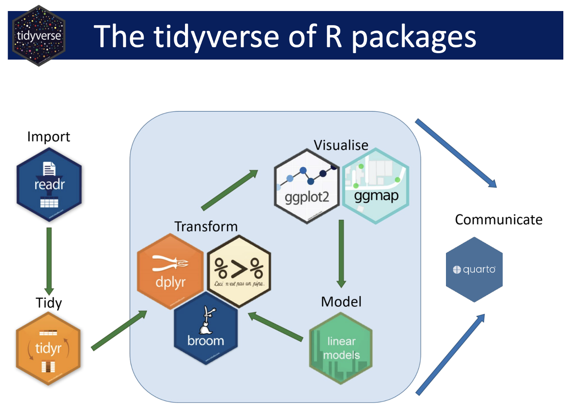

# remotes::install_github("brunocarlin/tidy.outliers")Lecture 13
Unit 2: Review
Review Day!
Component 2: Working with Data
Build confidence in wrangling, visualizing, and analyzing data. This section covers importing and cleaning data sets, working with joins, and creating effective visualizations. You’ll also delve into study design, hypothesis testing, and statistical analyses spanning uni-variate, bivariate, and multivariate techniques.
Learning Outcomes
- Import, clean, and merge data sets from diverse sources using core
tidyversepackages. - Conduct hypothesis testing and interpret results.
- Create impactful visualizations to communicate findings.
We have covered a ton of material in unit 2.


Today
Tip
We will look at some public water quality data to examine the relationship between bicarbonate and magnesium/calcium along the Colorado River.
Motivation
The balance between bicarbonate and Mg+Ca in water determines hardness, alkalinity, and pH stability, with direct implications for ecosystem health, water treatment, and infrastructure maintenance. The sum of magnesium and calcium concentrations is a key factor in determining water hardness which can impact aquatic ecosystems, water treatment, and infrastructure due to scaling.
⬆️ bicarbonate + ⬆️ Ca/Mg: Indicates water passing through carbonate-rich geology (limestone/dolomite), leading to high hardness but good buffering capacity.
⬇️ bicarbonate + ⬆️ Ca/Mg: Suggests non-carbonate sources of Mg and Ca, potentially from industrial pollution or weathering of silicate rocks.
⬆️ bicarbonate + ⬇️ Ca/Mg: Could be influenced by inputs like agricultural runoff or natural dissolution of bicarbonates from atmospheric CO₂.
In this lab, we are interested in understanding the relationship between bicarbonate and magnesium/calcium in the Colorado River Basin using a set of gages that have been active over the last ~100 years
Namely, we are interested in:
- The trend of Bicarbonate over time
- The relationship of Bicarbonate to Magnesium + Calcium along the river
- The strength of a predictive model for Bicarbonate using the sum Magnesium Calcium
1. Data Import & Setup
Sometimes you need new libraries!
- We can install from CRAN with
install.packages("package_name") - We can install from GitHub with
remotes::install_github("username/package_name")
Start with our libraries
- Here we load the libraries we will use in this lab
tidyversefor data manipulationtidymodelsfor modelingdataRetrievalfor downloading dataflextablefor making nice tablesvisdatfor EDA
library(tidyverse)
#> ── Attaching core tidyverse packages ──────────────────────── tidyverse 2.0.0 ──
#> ✔ dplyr 1.1.4 ✔ readr 2.1.5
#> ✔ forcats 1.0.0 ✔ stringr 1.5.1
#> ✔ ggplot2 3.5.1 ✔ tibble 3.2.1
#> ✔ lubridate 1.9.4 ✔ tidyr 1.3.1
#> ✔ purrr 1.0.4
#> ── Conflicts ────────────────────────────────────────── tidyverse_conflicts() ──
#> ✖ dplyr::filter() masks stats::filter()
#> ✖ dplyr::lag() masks stats::lag()
#> ℹ Use the conflicted package (<http://conflicted.r-lib.org/>) to force all conflicts to become errors
library(tidymodels)
#> ── Attaching packages ────────────────────────────────────── tidymodels 1.2.0 ──
#> ✔ broom 1.0.7 ✔ rsample 1.2.1
#> ✔ dials 1.4.0 ✔ tune 1.3.0
#> ✔ infer 1.0.7 ✔ workflows 1.2.0
#> ✔ modeldata 1.4.0 ✔ workflowsets 1.1.0
#> ✔ parsnip 1.3.0 ✔ yardstick 1.3.2
#> ✔ recipes 1.1.1
#> ── Conflicts ───────────────────────────────────────── tidymodels_conflicts() ──
#> ✖ scales::discard() masks purrr::discard()
#> ✖ dplyr::filter() masks stats::filter()
#> ✖ recipes::fixed() masks stringr::fixed()
#> ✖ dplyr::lag() masks stats::lag()
#> ✖ yardstick::spec() masks readr::spec()
#> ✖ recipes::step() masks stats::step()
#> • Learn how to get started at https://www.tidymodels.org/start/
library(dataRetrieval)
library(flextable)
#>
#> Attaching package: 'flextable'
#>
#> The following object is masked from 'package:purrr':
#>
#> compose
library(visdat) We can predefine our sites of interest for expediency. We do this by creating a data frame with the SiteID and SiteName
atomicvectors.We can also predefine the variables we are interested in.
sites <- data.frame(SiteID = c("USGS-09069000", "USGS-09085000", "USGS-09095500",
"USGS-09152500", "USGS-09180000", "USGS-09380000"),
SiteName = c("Eagle", "Roaring Fork", "Colorado 3",
"Gunnison", "Dolores", "Colorado 5"))
vars <- c('Magnesium', 'Calcium', 'Bicarbonate')Explore the Sites
## Access
site.info <- whatWQPsites(siteid = sites$SiteID)
#> GET:https://www.waterqualitydata.us/data/Station/search?siteid=USGS-09069000%3BUSGS-09085000%3BUSGS-09095500%3BUSGS-09152500%3BUSGS-09180000%3BUSGS-09380000&mimeType=csv&count=no
## Make a map!Data I/O
- We can use the
dataRetrievalpackage to download data from the USGS NWIS database. - This provides API access to the USGS NWIS database opposed to reading from a file.
# Data Access
nwis_wqp <- readWQPqw(siteNumbers = sites$SiteID, parameterCd = vars) |>
select(date = ActivityStartDate,
parameter = CharacteristicName,
SiteID = MonitoringLocationIdentifier,
value = ResultMeasureValue,
units = ResultMeasure.MeasureUnitCode,
media = ActivityMediaName) |>
filter(media=='Water') |>
left_join(sites, by = "SiteID") |>
select(contains('Site'), date, units, parameter, value)
#> GET:https://www.waterqualitydata.us/data/Result/search?siteid=USGS-09069000%3BUSGS-09085000%3BUSGS-09095500%3BUSGS-09152500%3BUSGS-09180000%3BUSGS-09380000&count=no&characteristicName=Magnesium%3BCalcium%3BBicarbonate&mimeType=csv
#> Waiting 2s for throttling delay ■■■■■■■■■■■■■■■
#> Waiting 2s for throttling delay ■■■■■■■■■■■■■■■■■■■■■■■■■■■■■■■
#> NEWS: Data does not include USGS data newer than March 11, 2024. More details:
#> https://doi-usgs.github.io/dataRetrieval/articles/Status.html
## EDA!Data Tidying & EDA
# Reduce to Site ID/Name, Date, parameters, values
# Compute Annual means
# EDA
# Visualize the dataModeling
# Long to wide, adding data
# Model AssumptionsFeature Engineering
# Help
library(tidy.outliers)
# Feature Engineering
# EDAModeling
# Bicarbonate Trends over the years# Bicarbonate vs. Magnesium + Calcium# Predictive modelSummary
What did we find? Did this align with our expectations? Did the process we just go through make sense? Did any of the skills seem alien?
Assignment
As we have reached the half way point of this course, take a moment to reflect on your journey so far. Please respond to each of the following prompts in a few sentences. The questions are guiding but not all need to be answered directly and deviations are welcome
1. Unit 1: Think back to the beginning—how comfortable were you with setting up and using R, RStudio, Git, and GitHub? Do you now feel more confident in managing your computational environment and organizing your data? What aspects still feel challenging or unclear? Do you feel that the skills learned are transitioning into other areas of your “computational life”?
2. Unit 2 : As we wrap up our primary unit on data wrangling, visualization, and analysis, how do you feel about your ability to import, clean, and work with data? Are there specific techniques (joins, visualizations, statistical methods, nests/groups) that you feel you’ve improved on? Thinking back 8 weeks, are you proud of the progress you’ve made or feeling lost? What areas do you want to focus on strengthening as we continue?
3. Looking Ahead:: Are you making the progress you hoped for? If not, what barriers are you facing, and what steps could help you overcome them? If yes, what strategies have been working for you? What are your goals for the remainder of the course and how can the teaching team best support you in reaching them?
4. Modes of Learning: How do you feel about the methods in which content is shared? Have lectures been useful? Labs? Office hours? Daily Exercises? What would you like to see continue, and what would you like us to consider changing to help your growth?
We know the learning curve with coding is STEEP!, but if you feel you are hanging on, I promise you are doing well.
Please be honest with yourself (and with us) in this reflection—there are no wrong answers! This is an opportunity to take stock of your growth and identify where you’d like to go next, and, for us to adopt to how we support you best.